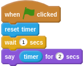

A timer lets you record how many seconds pass between events in Scratch.
You can find the timer in the Sensing menu. To use a timer in your script, the first thing you want to do is reset it.
Now the timer will be set to 0. You can use the timer to find out how many seconds have passed.
